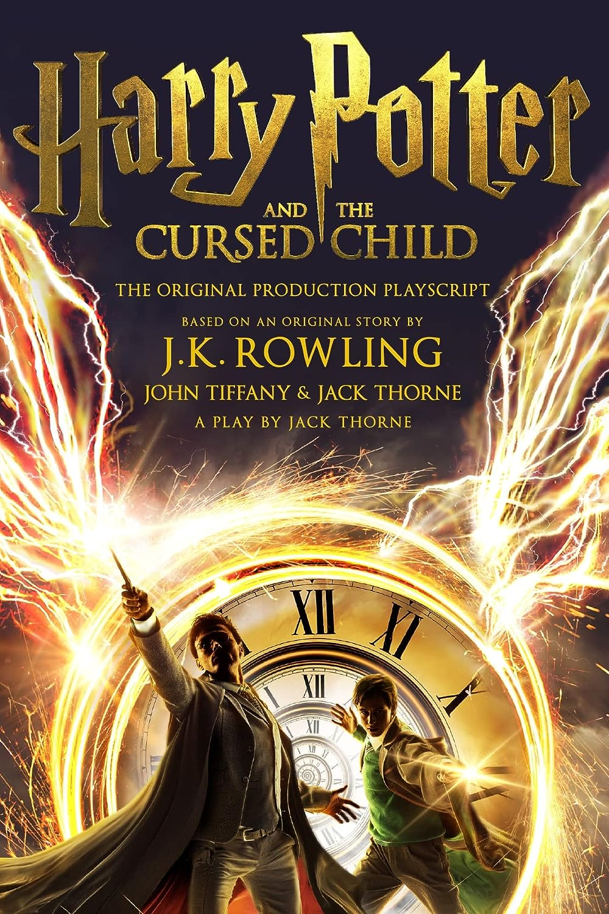

Fiction

Harry Potter and the Cursed Child
Harry Potter and the Cursed Child is a play written by Jack Thorne from an original story by Thorne, J. K. Rowling and John Tiffany. The plot occurs nineteen years after the events of Rowling's novel Harry Potter and the Deathly Hallows. It follows Albus Severus Potter, the son of Harry Potter, who is now Head of the Department of Magical Law Enforcement at the Ministry of Magic. When Albus arrives at Hogwarts, he gets sorted into Slytherin, and fails to live up to his father's legacy, making him resentful of his father. Rowling has referred to the play as "the eighth Harry Potter story".
Author: J.K. Rowling
$200
Non-Fiction

Rich Dad Poor Dad
Rich Dad Poor Dad is a 1997 book written by Robert T. Kiyosaki and Sharon Lechter. It advocates the importance of financial literacy (financial education), financial independence and building wealth through investing in assets, real estate investing, starting and owning businesses, as well as increasing one's financial intelligence (financial IQ)Rich Dad Poor Dad is written in the style of a set of parables based on Kiyosaki's life.The titular "rich dad" is his best friend's father who accumulated wealth due to entrepreneurship and savvy investing, while the "poor dad" is claimed to be Kiyosaki's own father who he says worked hard all his life but never obtained financial security.
Author: Robert Kiyosaki
$100
Manga

Death Note
Death Note (stylized in all caps) is a Japanese manga series written by Tsugumi Ohba and illustrated by Takeshi Obata. It was serialized in Shueisha's shōnen manga magazine Weekly Shōnen Jump from December 2003 to May 2006, with its chapters collected in 12 tankōbon volumes. The story follows Light Yagami, a genius high school student who discovers a mysterious notebook: the "Death Note", which belonged to the shinigami Ryuk, and grants the user the supernatural ability to kill anyone whose name is written in its pages.